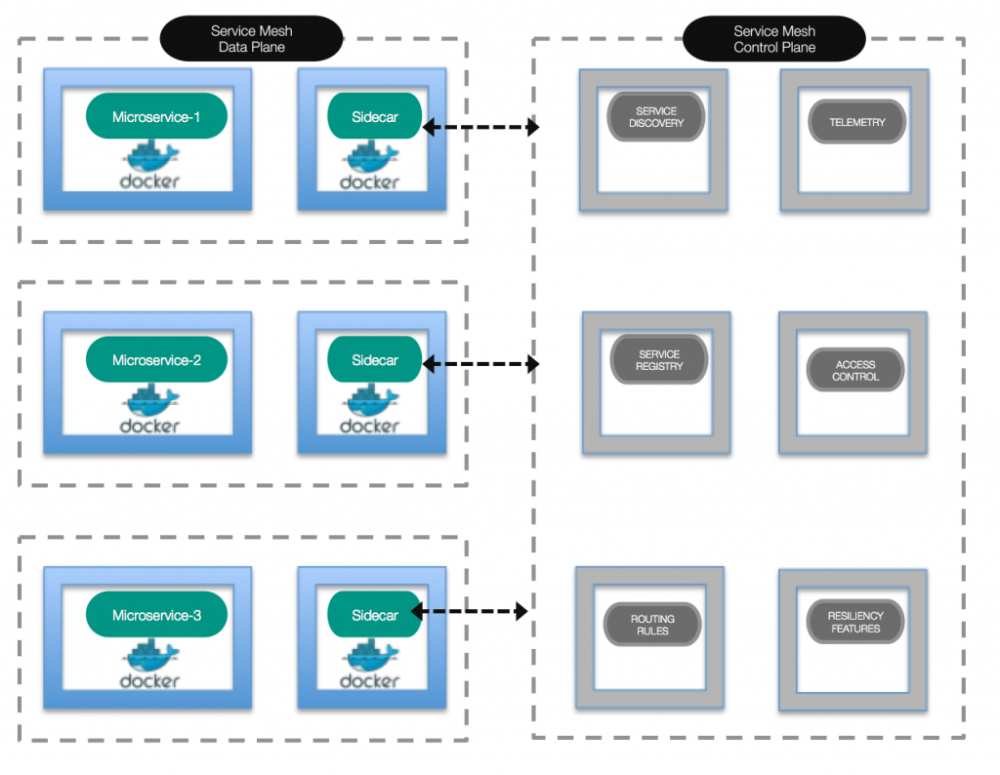
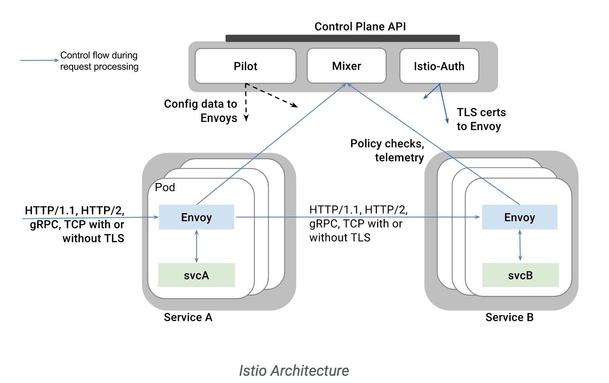

최근 MSA(Micro Service Architecture) 관련 세미나, 자료 등을 살펴보면 Istio라는 키워드가 급부상하고 있는 것을 알 수 있습니다. Istio가 무엇인지 조사한 결과를 공유합니다.
Istio를 설명하기 전에 Service Mesh Architecture 가 무엇인지 알아보겠습니다.
MSA(Micro Service Architecture)가 널리 보급되면서 service discovery, routing, failure handling 등 서비스 간 통신 문제가 발생하고 있습니다. 이러한 문제를 해결하기 위해 Spring Cloud Netflix 등 다양한 해결법이 등장하였고, Service Mesh Architecture 또한 이러한 해결 방법 중 하나입니다. Service Mesh Architecture란 MSA에서 서비스 간 통신 방법을 구체화한 아키텍처로 다음과 같은 구조를 가집니다.
이해를 돕기 위해 Docker에의 Service Mesh Architecture 이미지를 첨부합니다.

Service Mesh Architecture는 말 그대로 개발자가 직접 구성해야 할 아키텍처입니다. Istio란 Google, IBM이 Service Mesh Architecture 구현해 놓은 플랫폼으로 이를 활용하여 쉽게 Service Mesh Architecture를 적용할 수 있습니다. Istio는 Service Mesh Architecture의 구현 체기 때문에 구조, 특징, 동작 방식이 매우 유사합니다.

Istio는 Spring Cloud Netflix의 기능을 총집합 해둔 것으로 이해하면 됩니다. 실제로도 많은 사람들이 Istio와 Spring Cloud Netflix를 비교합니다. Spring Cloud Netflix는 애플리케이션 소스를 작성하여 사용하기 때문에 개발 언어, 유지 보수등에 많은 문제가 있지만 Istio는 플랫폼 영역에서 동작하기 때문에 개발 언어에 무관하게 동작이 가능하며 유지 보수도 쉽다는 장점을 갖고 있습니다.
Istio와 Spring Cloud Netflix를 직접 사용해본 결과 확실히 Istio가 개발/운영이 편했습니다. 다만 아직은 인큐베이팅 정도의 기술이며(최신버전 0.8), 레퍼런스가 부족하다는 점 등을 고려해야 할 것으로 보입니다.